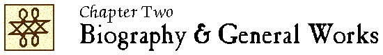

John Locke Chronology |
John Locke Manuscripts |
John Locke Resources |
John Locke Bibliography | ||

|
1676-1700 1705-1750 1751-1800 1801-1850 1851-1900 |
1901-1910 1911-1920 1921-1930 1931-1940 1941-1950 |
1951-1960 1961-1970 1971-1980 1981-1990 1991-2000 |
2001-2005 2006-2010 2011-2015 2016 2017 |
 2001
2001
“W. E. Gladstone, an annotated key” / Ruth Clayton. // IN: Notes & queries. – 48 (2001):140-143.
LS 2:5
“Huguenot thought after the revocation of the Edict of Nantes : toleration, ‘Socinianism’, integration and Locke” / John Marshall. // IN: From strangers to citizens : the integration of immigrant communities in Britain, Ireland and colonial America, 1550-1750 / edited by Randolph Vigne and Charles Littleton. – London : The Huguenot Society of Great Britain and Ireland ; Brighton ; Portland : Sussex Academic Press, 2001. – pages 383-396.
“Rousseau disciple de Locke?” / Jørn Schøsler. // IN: Études Jean-Jacques Rousseau. – 12 (2000/01):215-226.
“From Montpellier to New England : John Locke on wine” / Tim Unwin. // IN: Place, culture and identity : essays in historical geography in honour of Alan R. H. Baker / edited by Iain S. Black and Robin A. Butlin. – Saint-Nicholas, Québec : Presses de l’Université Laval, 2001. – (Géographie historique) – p. 69-90.
LS 4:10
“John Locke” / William Uzgalis. // IN: Stanford encyclopedia of philosophy / principal editor, Edward N. Zalta. – First published Sep. 2, 2001; substantive revision July 10, 2012.
Available at: http://plato.stanford.edu/entries/locke.
LS 6:12
1688 : a global history / John E. Wills, Jr. – New York ; London : Norton, ©2001.
See Ch. 20, “Newton, Locke, and Leibniz” (p. 242-252)
2002
“Introduction.” // IN: Selected correspondence / John Locke ; edited by Mark Goldie (2002). – p. viii-xxix.
“Locke, John (1632-1704)” / James Norton. // IN: Absolutism and the scientific revolution, 1600-1720 : a biographical dictionary / edited by Christopher Baker. – Westport, Conn. ; London : Greenwood Press, 2002. – (The great cultural eras of the Western world). – p. 236-238.
“Locke, John” / Rolf W. Puster. // IN: Religion in Geschichte und Gegenwart : Handwörterbuch für Theologie und Religionswissenschaft / herausgegeben von Hans Dieter Betz, Don S. Browning, Bernd Janowski, Eberhard Jüngel. – Vierte, völlig neu bearbeitete Auflage. – Tübingen : Mohr Siebeck, 1998-2005. – Band 5 (2002):480-481.
English translation in: Religion past & present : encyclopedia of theology and religion / edited by Hans Dieter Betz, Don S. Browning, Bernd Janowski, Eberhard Jüngel. – Leiden ; Boston : Brill, 2007-2013. – vol. 7 (2009):578b-579b. – Unverified.
“Peter Laslett – a personal appreciation” / G.A.J. Rogers. // IN: Locke studies. – 2 (2002):13-18.
LS 3:11
2003
Locke : a very short introduction / John Dunn. – Oxford ; New York : Oxford University Press, 2003. – 112 p. : ill. – (Very short introductions ; 84)
Based on Locke (1984).
LS 3:6
“Locke, John” / Victor Nuovo. // IN: Encyclopedia of the Enlightenment / Alan Charles Kors, editor in chief. – Oxford ; New York : Oxford University Press, 2003. – vol. 2:427-431.
LS 3:10
Virtù difficili : John Locke e gli antichi maestri / Raffaele Russo. – Napoli : Guida, 2003. – 151 p. – (Etica pratica)
ISBN 88-7188-667-4.
LS 5:12
“Locke, John (1632-1704)” / Luisa Simonutti. // IN: The dictionary of seventeenth and eighteenth century Dutch philosophers / general editors, Wiep van Bunge … [and others]. – Bristol : Thoemmes Press, 2003. -- vol. 2:633-639.
“Lady Masham’s account of Locke” / Roger Woolhouse. // IN: Locke studies. – 3 (2003):167-193.
Includes transcript of Universiteitsbibliotheek Amsterdam (UvA), MS. J 57a.
LS 4:11
2004
“A woman’s influence? : the intellectual exchange between Locke and Masham.”– See entry in Chapter 3.
Locke / Jean-Pierre Cléro. – Paris : Ellipses, 2004. – 109 p. – (Philo-philosophes)
ISBN 2-7298-1635-6.
Unverified.
The Enlightenment and the intellectual foundations of modern culture / Louis Dupré. – New Haven ; London : Yale University Press, ©2004. – xiv, 397 p. (passim)
“John Locke (1632-1704)” / Louis A. Gebhard. // IN: The age of Milton : an encyclopedia of major 17th-century British and American authors / edited by Alan Hager. – Westport, Conn. ; London : Greenwood Press, 2004. – p. 206-215.
“The early biographical tradition” / Mark Goldie. – Paper presented at a conference “John Locke through the centuries : assessing the Lockean legacy, 1704-2004,” Beinecke Library, Yale University, October 29, 2004.
John Locke and the Mashams at Oates / by Mark Goldie. – [Cambridge] : Churchill College, University of Cambridge, 2004. – 42 p.
“Published by the parish of High Laver, Essex, to mark the tercentenary of Locke’s death.”
LS 4:6
“John Locke and the intellectual legacy of the early Enlightenment” / Jonathan Israel. – Paper presented at a conference “John Locke through the centuries : assessing the Lockean legacy, 1704-2004,” Beinecke Library, Yale University, October 28, 2004.
John Locke [videorecording] / producer, Daniela Blanco ; director, Pablo Garcia ; scriptwriter, Mariana Iturriza ; Tranquilo Producciones. – Princeton, NJ : Films for the Humanities & Sciences, 2004. – 1 videorecording (21 min.). – (Words of change)
Chronicles the life and work of John Locke. Locke’s political philosophy laid the philosophical foundation for the development of democracy in the west and is considered as one of the architects of the modern world.
Unverified.
“Socialism is dead, long live liberalism and social justice : John Locke is a prophet for our times, largely ignored in his own land” / Martin Kettle. // IN: The Guardian. – Oct. 26, 2004.
Available online at: http://www.guardian.co.uk/comment/story/0,,1335926,00.html (accessed October 26, 2004)
“Locke, John (1632-1704)” / J.R. Milton. // IN: Oxford dictionary of national biography / ed. H.C.G. Matthew and Brian Harrison. – Oxford : Oxford University Press, 2004. – vol. 34:216-228.
Available online to subscribers: http://www.oxforddnb.com/view/article/16885 (accessed October 26, 2004)
LS 5:10
“The modern biographical tradition” / J.R. Milton. – Paper presented at a conference “John Locke through the centuries : assessing the Lockean legacy, 1704-2004,” Beinecke Library, Yale University, October 29, 2004.
“The unscholastic statesman : Locke and the Earl of Shaftesbury” / John Milton. – Paper presented at the John Locke Tercentenary Conference, St Anne’s College, Oxford, 2-4 April 2004.
“Locke the plotter? : Ashcraft’s Revolutionary politics re-considered.” – See entry in Chapter 7.
“A portrait of John Locke as a Christian virtuoso” / Victor Nuovo. – Keynote address delivered at “Civility, philosophy and public debate : a conference marking the 300th anniversary of the death of John Locke (1632-1704),” Centre for Public Culture and Ideas, Griffith University, Brisbane, Australia, July 12, 2004.
Abstract: http://www.griffith.edu.au/centre/cpci/pdf/john_locke_abstracts.pdf (accessed October 26, 2004)
Revised version included as Chapter 1 of Christianity, antiquity, and enlightenment (2011).
“Die Locke-Rezeption in der deutschen Aufklärung : frühe lateinische und deutsche Übersetzungen von Lockes Werken (1709-61)” / Konstantin Pollok. // IN: Locke in Germany : early German translations of John Locke, 1709-61 / selected and introduced by Konstantin Pollak. – Bristol : Thoemmes Continuum, 2004. – vol. 1:v-xxxviii.
“Locke’s legacy in the wider world” / Ian Shapiro. – Paper presented at a conference “John Locke through the centuries : assessing the Lockean legacy, 1704-2004,” Beinecke Library, Yale University, October 30, 2004.
“The ‘Dry club’ and the virtual ‘salon littéraire’ at Oates : the cradle of Locke’s final religious writings” / Luisa Simonutti. – Paper presented at the John Locke Tercentenary Conference, St Anne’s College, Oxford, 2-4 April 2004.
“Locke traducteur de Nicole, Of the weaknesse of man” / Luisa Simonutti. – Paper presented at “Locke, les idées et les choses” : journée internationale d’études pour le tricentenaire de John Locke, Centre d’Histoire de la Philosophie Moderne, 23 jan. 2004.
“Locke and the Revolution of 1688” / William Thomas. – Paper presented at the “John Locke Day Programme”, University of Bristol, 23 October 2004.
“Celebrating John Locke after 300 years” / by Richard Yeo. // IN: Australian. – 7 July 2004:32-33.
Available online at: http://www.griffith.edu.au/centre/cpci/pdf/yeo_australian.pdf (accessed October 26, 2004)
“John Locke on friendship” / Richard Yeo. – Paper presented at “Civility, philosophy and public debate : a conference marking the 300th anniversary of the death of John Locke (1632-1704),” Centre for Public Culture and Ideas, Griffith University, Brisbane, Australia, July 13, 2004.
Abstract: http://www.griffith.edu.au/centre/cpci/pdf/john_locke_abstracts.pdf (accessed October 26, 2004)
2005
“Wolfgang Marius von Leyden, 1911-2004” / E.J. Lowe. // IN: Locke newsletter. – 5 (2005):17-18.
“Le Rococo et l’identité britannique dans le portrait anglais du XVIIIe siècle” / Catherine Purcell. // IN: Bulletin de la Société d’Études Anglo-Américaines des XVIIe et XVIIIe Siècles. – 61 (2005):157-168.
Unverified.
ロック宗敎思想の展開 / 妹尾剛光著. – 吹田 : 関西大学出版部, 2005.
Rokku shūkyō shisō no tenkai / Senō Gōkō. – Suita : Kansaidaigakushuppanbu, 2005. – 716 p.
ISBN 4-873-54416-5.
Unverified.
ジョン・ロック研究 / 田中正司著. – 新増補. – 東京 : 御茶の水書房, 2005.
Jon Rokku kenkyū / Tanaka Shōji. – Tōkyō : Ochanomizushobō, 2005. – 433, 7 p.
ISBN 4-275-00407-8.
Unverified.
2006
Anstey, P. R. (ed.)
John Locke : critical assessments of leading political philosophers. Series II / edited by Peter Anstey. – Abingdon, Oxon. ; New York : Routledge, 2006. – 4 vols.
Contents: vol. 1. Moral and political philosophy – vol. 2. Knowledge, its nature and origins – vol. 3. Metaphysics – vol. 4. Biography, theology, and education.
ISBN 0415350549 (set)
Unverified.
“La philosophie épistolaire de Locke : la vérité à l’épreuve de l’amitié” / Jean-François Baillon. // IN: Bulletin de la Société d’Etudes Anglo-Américaines des XVIIe et XVIIIe Siècles. – 63 (2006):133-152.
Unverified.
John Locke, champion of modern democracy / Graham Faiella. – 1st ed. – New York, N.Y. : Rosen Pub. Group, 2006. – 112 p. – (Philosophers of the Enlightenment)
ISBN 1-404-20420-2.
LS 7:7
“John Locke (1632-1704) : Kurzbiographie” / Uta Golembek. // IN: John Locke : Aspekte seiner theoretischen und praktischen Philosophie / herausgegeben von Lothar Kreimendahl (2006). – p. 237-240.
Unverified.
LS 7:7
Kreimendahl, L. (ed.)
John Locke : Aspekte seiner theoretischen und praktischen Philosophie / herausgegeben von Lothar Kreimendahl. – Hamburg : F. Meiner, ©2006. – 240 p. – (Aufklärung ; Bd. 18, Jg. 2006)
Contents: “Vorwort” / Lothar Kreimendahl (p. 1-6) – “Vom Unverständlichen zum als selbstverständlich Vorausgesetzten : Lockes unerläuterter Ideenbebriff” / Andreas Kemmerling (p. 7-20) – “Locke über die Intentionalität sinnlicher Ideen” / Ralph Schumacher (p. 21-36) – “John Lockes Konzept der persönlichen Identität : ein Resümee” / Reinhard Brandt (p. 37-54) – “Eine Klippe fü die Selbsttransparenz des Bewußtseins? : zu Lockes Begriff der Erinnerung” / Rolf W. Puster (p. 55-68) – “John Lockes Lehre vom Allgemeinen” / Rainer Specht (p. 69-94) – “Der Begriff der Intuition bei Locke” / Udo Thiel (p. 95-112) – “Locke und Berkeley über abstrakte Ideen” / Katia Saporiti (p. 113-142) – “Die Rezeption von Lockes Nachlaßschrift ‘Of the conduct of the understanding’ in der deutschen Aufklärung” / Ivano Petrocchi (p, 143-158) – “Vernunft, Erfahung, Religion : Anmerkungen zu John Lockes ‘Reasonableness of Christianity’ ” / Wolfgang Leidhold (p. 159-178) – “Lockes Theorie der Toleranz” / Günter Gawlick (pages 179-200) – “Die Legitimität politischer Herrschaft bei John Locke” / Jürgen Sprute (p. 201-222) – “Strafe im Naturzustand” / Jean-Claude Wolf (p. 223-236) – “John Locke (1632-1704) : Kurzbiographie” / Uta Golembek (p. 237-240)
Unverified.
“Locke and the reform of the calendar” / J.R. Milton. // IN: Locke studies. – 6 (2006):173-177.
LS 7:12
“Locke and the Memoirs of Edmund Ludlow” / Philip Milton. // IN: Locke studies. – 6 (2006):179-187.
LS 7:12
“John Locke entre o céu o inferno” / Eunice Ostrensky. // IN: Integração (São Paulo). — 47 (2006):369-376.
Unverified.
LS 11:9
“John Locke, politics, philosophy, and public service” / W. J. Sheils. // IN: The human tradition in modern Britain / edited by Caroline Litzenberger and Eileen Groth Lyon. – Lanham ; Toronto ; Plymouth, UK : Rowman & Littlefield Publishers, ©2006. – (The human tradition around the world series). – p. 1-16.
LS 8:15
“English guests at ‘De Lantaarn’.” – See entry in Chapter 12.
“Political society and religious liberty : Locke at Cleves and in Holland” / Luisa Simonutti. // IN: British journal for the history of philosophy. – 14 (2006):413-436.
LS 6:11
“Locke, John” / M. Sina. “L’educazione dell’uomo” / M. Gennari. // IN: Enciclopedia filosofica. – Nuova edizione interamente riveduta e ampliata. – Milano : Bompiani, 2006. – vol. 7:6531-6548.
“John Locke” / Z. Sng. // IN: The Oxford encyclopedia of British literature. – New York : Oxford University Press, 2006. – Vol. 3:324-327.
LS 6:11
“John Locke and polite philosophy” / Richard Yeo. // IN: The philosopher in early modern Europe : the nature of a contested identity / edited by Conal Condren, Stephen Gaukroger and Ian Hunter. – Cambridge : Cambridge University Press, 2006. – (Ideas in context ; 77). – p. 254-275.
LS 7:19
2007
“Jean Le Clerc, 1686-1700 : the first stage of Le Clerc’s transmission of English philosophy and science to the Netherlands and from there to the continent : Locke, Boyle and Cudworth in the Bibliothèque universelle et historique” / Constance Blackwell. – Paper presented at the Annual Conference of the British Society for the History of Philosophy, Rotterdam, 26-28 March 2007.
Buickerood, J. & Havens, E. (eds.)
“John Locke through the centuries : assessing the Lockean legacy, 1704-2004 : Beinecke Rare Book and Manuscripts Library, Yale University, 28-30 October 2004” / edited by James G. Buickerood and Earle Havens. // IN: Eighteenth-century thought. – 3 (2007):1-233.
Versions of papers presented at the conference.
Contents: “Preface” / Earle Havens (p. 3-6) – “Lasting monuments to the admiration of posterity : charting Locke’s legacy” / James G. Buickerood and Earle Havens (p. 7-36) – “John Locke and the intellectual legacy of the early Enlightenment” / Jonathan I. Israel (p. 37-55) – “The early lives of John Locke” / Mark Goldie (p. 57-87) – “John Locke, the modern biographical tradition” / J. R. Milton (p. 89-109) – “ ‘A law of continuity in the progress of theology’ : assessing the legacy of John Locke’s Reasonableness of Christianity, 1695-2004” / Justin Champion (p. 111-142) – “The legacy of Two treatises of government” / Ian Harris (p. 143-167) – “Locke’s Essay concerning human understanding : the philosophical legacy” / G. A. J. Rogers (p. 169-187) – “Locke’s modest impact on eighteenth-century natural science : the encyclopedic evidence” / Paul Schuurman (p. 189-206) – “Citizens, wives, latent citizens and non-citizens in the Two treatises : a legacy of inclusion, exclusion and assimilation” / Barbara Arneil (p. 207-233)
“Lasting monuments to the admiration of posterity : charting Locke’s legacy” / James G. Buickerood and Earle Havens. // IN: “John Locke through the centuries …” / edited by James G. Buickerood and Earle Havens. // IN: Eighteenth-century thought. – 3 (2007):7-36.
LS 7:5
Locke / Edward Feser. – Oxford : Oneworld, 2007. – xii, 178 p. – (Oneworld thinkers)
ISBN 978-1-85168-489-2 (pbk.)
Review: J. Hill, Locke studies 7 (2007):231-235.
LS 7:7
“The early lives of John Locke” / Mark Goldie. // IN: “John Locke through the centuries …” / edited by James G. Buickerood and Earle Havens. // IN: Eighteenth-century thought. – 3 (2007):57-87.
LS 7:7
“John Locke and the intellectual legacy of the early Enlightenment” / Jonathan I. Israel. // IN: “John Locke through the centuries …” / edited by James G. Buickerood and Earle Havens. // IN: Eighteenth-century thought. – 3 (2007):37-55.
LS 7:9
“John Locke, the modern biographical tradition” / J. R. Milton. // IN: “John Locke through the centuries …” / edited by James G. Buickerood and Earle Havens. // IN: Eighteenth-century thought. – 3 (2007):89-109.
LS 7:12
“Pierre Coste, John Locke, and the Shaftesbury family : a new letter” / J. R. Milton. // IN: Locke studies. – 7 (2007):159-171.
Includes a transcription of a letter from Pierre Coste to James Harris, 27 December 1738, Hampshire Record Office, 9M73/G232.
LS 8:12
“Locke the plotter? : Ashcraft’s Revolutionary politics reconsidered.” – See entry in Chapter 7.
“Locke ascending” / Glenn A. Moots. // IN: Eighteenth-century studies. – 40 (2006/7):482-486.
Review article on Forster, John Locke’s politics of moral consensus (2005); Marshall, John Locke, toleration and early Enlightenment culture (2006); Parker, The biblical politics of John Locke (2004); and Yolton, The two intellectual worlds of John Locke 2004.
LS 7:12
Anonymity : a secret history of English literature / John Mullan. – London : Faber and Faber, 2007.
See p. 159-165.
“Originality, authenticity, influence, and exile : the case of John Locke in Holland“ / John Rogers. – Paper presented at the Annual Conference of the British Society for the History of Philosophy, Rotterdam, 26-28 March 2007.
“Locke, penseur subversif dans les manuscrits clandestins” / Jørn Schøsler. // IN: La lettre clandestine. – 15 (2007):17-44.
Unverified.
LS 7:15
“Locke– tradurre e abusare” / Luisa Simonutti. // IN: “Traduzioni e circolazione delle idee nella cultura europea tra ’500 e ’700 : atti del convegno internazionale, Firenze, Dipartimento di Studi storici e geografici, 22-23 Settembre 2006” / a cura di Girolamo Imbruglia, Rolando Minuti e Luisa Simonutti. // IN: Cromohs : cyber review of modern historiography. – 12 (2007).
Available online at: http://www.cromohs.unifi.it/12_2007/simonutti_locke.html [viewed 9 April 2009]
“Locke, John (1632-1704)” / David White. // IN: The new encyclopedia of unbelief / edited by Tom Flynn. – Amherst, New York : Prometheus Books, 2007. – pages 508-509.
Locke : a biography / Roger Woolhouse. – Cambridge : Cambridge University Press, 2007. – xviii, 528 p., 12 p. of illustrations.
ISBN 978-0-521-81786-8.
Errata available online at: http://www.cambridge.org/catalogue/catalogue.asp ?isbn=9780521817868&ss=res.
Reviews: V. Chappell, Locke studies 7 (2007):207-211; J. Milton, Notre Dame philosophical reviews 2007.05.19; C. Kyle, Renaissance quarterly 60 (2007), 1429-1431; J. W. Koterski, Int.Phil.Q. 47 (2007):491-493; H. Dawson, T.L.S. 6 June 2008; M. Losonsky, J.Hist.Phil. 46 (2008):145-146; J. Walmsley, Brit.J.Hist.Phil. 16 (2008):447-450; A. LoLordo, Phil.Bks. 49(2008):254-257l; V. Nuovo, Rev. of Metaph. 61 (2008):868-870; I. Harris, “Writing the life of Locke” (2010).
LS 7:19
2008
“Jean Sebastian Yolton (1924-2008)” / James G. Buickerood. // IN: Locke studies. – 8 (2008):19-21.
Available online: https://doi.org/10.5206/ls.2008.996
“The loisirs of the republic of letters : John Locke in the Dutch-Romanian/Greek connection” / S. Ciutacu. // IN: Dutch crossing. – 32 (2008):110-115.
Unverified.
LS 9:6
The phoenix : St. Paul’s Cathedral and the men who made modern London / Leo Hollis. – London : Weidenfeld & Nicolson, 2008. – x, 380 p.
Also published as: London rising : the men who made modern London / Leo Hollis. – New York : Walker & Company, 2008.
Hutton, S. & Schuurman, P. (eds.)
Studies on Locke : sources, contemporaries, and legacy : in honour of G.A.J. Rogers / edited by Sarah Hutton and Paul Schuurman. – Dordrecht, Netherlands : Springer, ©2008. – xix, 289 p. – (Archives internationales d’histoire des idées = International archives of the history of ideas ; 197)
ISBN 987-1-4020-8324-2.
Review: S. Gaukroger, Br.J.Hist.Phil. 18 (2010):166-168.
LS 8:9
“John Locke, William Penn, and the question of Locke’s pardon” / Philip Milton. // IN: Locke studies. – 8 (2008):125-169.
Available online: https://doi.org/10.5206/ls.2008.1011
LS 9:10
“Circles of virtuosi and ‘charity under different opinions’ : the crucible of Locke’s last writings” / Luisa Simonutti. // IN: Studies on Locke / edited by Sarah Hutton and Paul Schuurman (2008). – p. 159-175.
Contains transcriptions of “Pacifick Christians” [MS. Locke c. 27, f. 80a]; and “Rules of the Dry Club” [MS. Locke c. 25, ff. 56r-57v]
LS 8:15
“Locke the thinker” / Timothy Stanton. // IN: Locke studies. – 8 (2008):23-58.
For a revised and shortened version, see “Christian foundations, or some loose stones?” (2011)
Available online: https://doi.org/10.5206/ls.2008.999
LS 9:14
2009
“The present state of Locke biography” / Mark Goldie. // IN: Eighteenth-century thought. – 4 (2009):371-396.
Review article on Woolhouse, Locke (2007).
LS 9:8
“Locke, William III, and the reform of the universities” / J. R. Milton. // IN: Locke studies. – 9 (2009):123-138.
Available online: https://doi.org/10.5206/ls.2009.906
LS 10:10
“John Locke’s expulsion from Christ Church in 1684” / Philip Milton. // IN: Eighteenth-century thought. – 4 (2009):29-65.
LS 9:11
“Locke, John” [in Religion past & present]. – See entry for original German version (2002)
“Holberg, lecteur de Locke : un example de réception chez les Lumières danoises” / Jørn Schøsler. // IN: Dix-huitième siècle. – 41 (2009):517-535.
Unverified.
LS 10:11
“Un-locking Locke : history, rhetoric, and modernity” / Sean D. Sutton. // IN: Review of politics. – 71 (2009):483-486.
Review of A. S. Rosenthal, Crown under law (2008) and P. Vogt, John Locke and the rhetoric of modernity (2008).
LS 10:13
“John Locke and Somerset” / Roger Woolhouse. // IN: Somerset archaeology and natural history. – 152 (2009):1-10.
LS 9:17
“John Locke on conversation with friends and strangers” / Richard Yeo. // IN: Parergon. – 26:no. 2 (2009):11-37.
LS 10:14
2010
The science of liberty : democracy, reason, and the laws of nature / Timothy Ferris. – New York : Harper, ©2010.
See esp. p. 67-74.
LS 10:6
“Chronology of Locke’s life” / Mark Goldie. // IN: The Continuum companion to Locke / general editors, S.-J. Savonius-Wroth, Paul Schuurman, Jonathan Walmsley (2010). – p. 37-41.
“The life of John Locke” / Mark Goldie. // IN: The Continuum companion to Locke / general editors, S.-J. Savonius-Wroth, Paul Schuurman, Jonathan Walmsley (2010). – p. 1-36.
“Writing the life of Locke” / Ian Harris. // IN: Journal of historical biography. – 7 (spring 2010):138-149.
Review essay on Woolhouse, Locke (2007)
“John Locke ou la traduction de l’entendement” / Lieve Jooken, Guy Rooryck. // IN: Event or incident : on the role of translations in the dynamics of cultural exchange = Evénement ou incident : du rôle des traductions dans les processus d’échanges culturels / Ton Naajikens (ed.). – Bern ; New York : Peter Lang, 2010. – (Genèses des textes = Textgenesen). – p. 211-246).
Unverified.
“Locke’s civil philosophy in the early eighteenth-century république des lettres : an important footnote” / Petter Korkman. // IN: The Continuum companion to Locke / general editors, S.-J. Savonius-Wroth, Paul Schuurman, Jonathan Walmsley (2010). – p. 302-313.
“Locke and the ancients : from Athens to Galilee”/ Glenn A. Moots. // IN: Locke studies. – 10 (2010):131-158.
LS 11:8
Savonius-Wroth, S.-J., Schuurman, P. & Walmsley, J. (eds.)
The Continuum companion to Locke / general editors, S.-J. Savonius-Wroth, Paul Schuurman, Jonathan Walmsley. – London ; New York, NY : Continuum, 2010. – xx, 330 p.
Contents: 1. Life – 2. Sources and contemporaries – 3. Early critics – 4. Concepts – 5. Synopses of key writings – 6. Influence.
ISBN 978-0-8264-2811-0.
Reviews: N. Jolley, British journal for the history of philosophy 19 (2011):342-345; E. J. Lowe, Locke studies 11 (2011):173-175.
LS 10:11
Paperback edition: Bloomsbury companion to Locke / general editors S.-J. Savonius-Wroth, Paul Schuurman, Jonathan Walmsley. – London : Bloomsbury, 2014. – xx, 330 pages. – (Bloomsbury companions). – ISBN 978-1472-52844-5.
“The reception of Locke in England in the early eighteenth century : metaphysics, religion and the state” / Timothy Stanton. // IN: The Continuum companion to Locke / general editors, S.-J. Savonius-Wroth, Paul Schuurman, Jonathan Walmsley (2010). – p. 292-302.
“The great ocean of knowledge” : the influence of travel literature on the work of John Locke. – See entry in Chapter 11.
John Locke and modern life / Lee Ward. – Cambridge ; New York : Cambridge University Press, 2010. – x, 315 p.
ISBN 978-0-521-19280-4.
“John Locke’s Somerset property” / Roger Woolhouse. // IN: Somerset archaeology and natural history. – 153 (2010):97-113.
LS 11:12
“Contemporary Locke scholarship” [in The Continuum companion to Locke]. – See entry in Chapter 1.
|
1676-1700 1705-1750 1751-1800 1801-1850 1851-1900 |
1901-1910 1911-1920 1921-1930 1931-1940 1941-1950 |
1951-1960 1961-1970 1971-1980 1981-1990 1991-2000 |
2001-2005 2006-2010 2011-2015 2016 2017 |